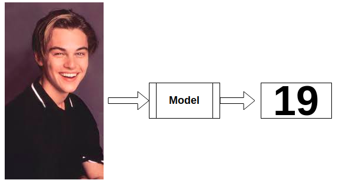

Age Estimation
- Ahmed Hesham #10
- Ahmed Khaled Abdel Sayed #4
Problem Statement
Age recognition is the estimation of people’s age based on biometric features, more specifically their facial features from their images. Information about people’s age can be used for different purposes such as targeting, advertising, audience analytics and many more. For example, with automatic age estimation, users can easily manipulate and deliver their content to the right age group at the right time.
Dataset
There are multiple dataset for the age estimation problem. The most used datasets are:
- CACD
- MORTH-2
- AFAD
- UTKFace
In this Project, the main foucs was on the CACD (Cross-Age Celebrity Dataset) which contains more than 160,000 images of 2,000 celebrities with age ranging from 16 to 62. To the best of our knowledge, it is by far the largest publicly available cross-age face dataset.

Input/Output Examples
Our System is Simple. The input is an image of a person's face. And the output is his estimated age.


State of the art
In the past few years, multiple researches were made to discuss this problem and build models for it. some of the models
- RNDF
- CORAL
- CMAAE-OR
the results of those models are shown below
From the table above we can see that the CORAL model provides state of the art results for most of the datasets. For CACD, the RNDF model provided better results. So we decided to work on the performance of the CORAL model on this dataset (CACD) and try to learn from the structure of the RNDF model to improve the CORAL to pass the state of the art result for CACD
Orignial Model from Literature
The Original model we used and studied was CORAL and RNDF models
CORAL Model
Proposed Updates
Update #1: imply coral model on face Features not the whole face at once
Use the same neural network on all features to decrease Number of parameter
Update #2: same as update 1
but Use a simultaneous neural network on each feature
Update #3: same as update 1 & 2
but Use a 3 networks
Results
Evaluation metric is mean absolute error
This evaluation is after 190 epochs on 40000 image
Technical report
- Programming framework : pytorch
- Training hardware : colab
- Training time : 14 hours
- Number of epochs : 200
- Time per epoch 4 minutes
- Number of training set images : 40000 image
- Number of test set images : 7000 image
Conclusion
References
List all references here, the following are only examples